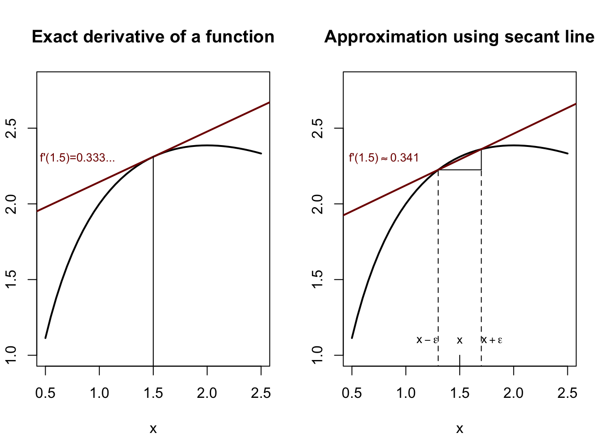

Code
#secant approximation to the derivative
par(mfrow=c(1,2),mar=c(4,2,4,2)+0.1)
sec.x <- seq(0.5,2.5,0.05)
fsec <- function(x) 2*log(x)-x+3
plot(sec.x,fsec(sec.x),type='l',lwd=2,ylim=c(1,2.8),
main='Exact derivative of a function',xlab='x',ylab='f(x)')
abline(fsec(1.5)-0.5,1/3,col='#800000',lwd=2)
lines(x=c(1.5,1.5),y=c(0,fsec(1.5)))
text(0.8,2.3,"f'(1.5)=0.333...",col='#800000',cex=0.8)
plot(sec.x,fsec(sec.x),type='l',lwd=2,ylim=c(1,2.8),
main='Approximation using secant line',xlab='x',ylab='f(x)')
lines(x=c(1.3,1.3),y=c(0,fsec(1.3)),lty=2)
lines(x=c(1.7,1.7),y=c(0,fsec(1.3)),lty=2)
lines(x=c(1.3,1.7),y=c(fsec(1.3),fsec(1.3)))
lines(x=c(1.7,1.7),y=c(fsec(1.3),fsec(1.7)))
lines(x=c(1.5,1.5),y=c(0,1))
sec.b <- (fsec(1.7)-fsec(1.3))/0.4
abline(fsec(1.3)-1.3*sec.b,sec.b,1/3,col='#800000',lwd=2)
text(0.8,2.3,expression("f'(1.5)"%~~%0.341),col='#800000',cex=0.8)
text(1.5,1.1,expression(x),cex=0.8)
text(1.2,1.1,expression(x-epsilon),cex=0.8)
text(1.8,1.1,expression(x+epsilon),cex=0.8)
